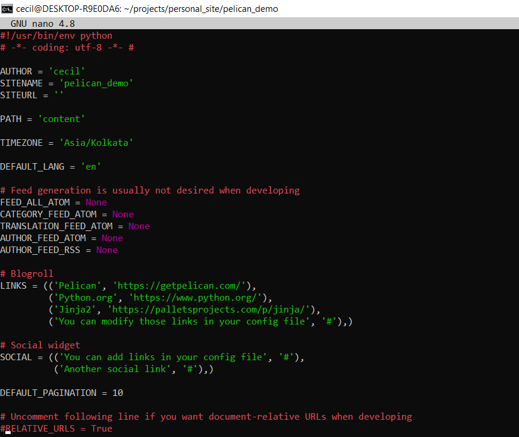
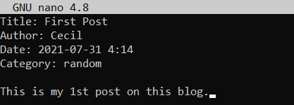
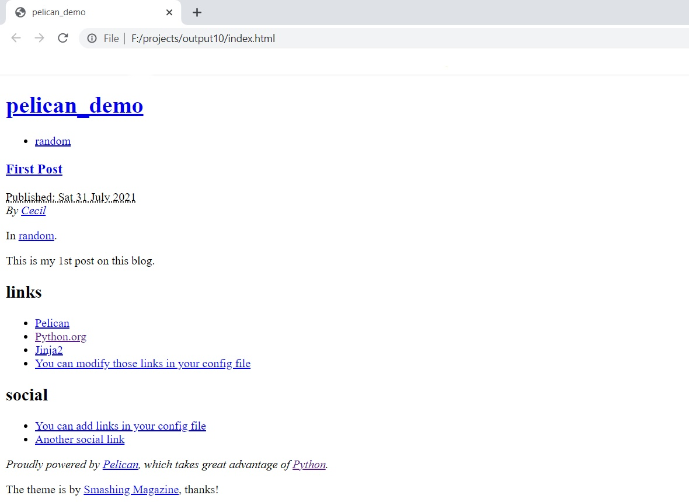
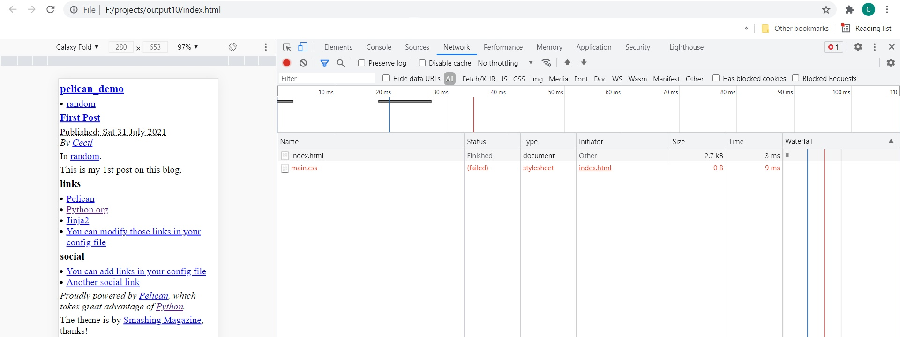
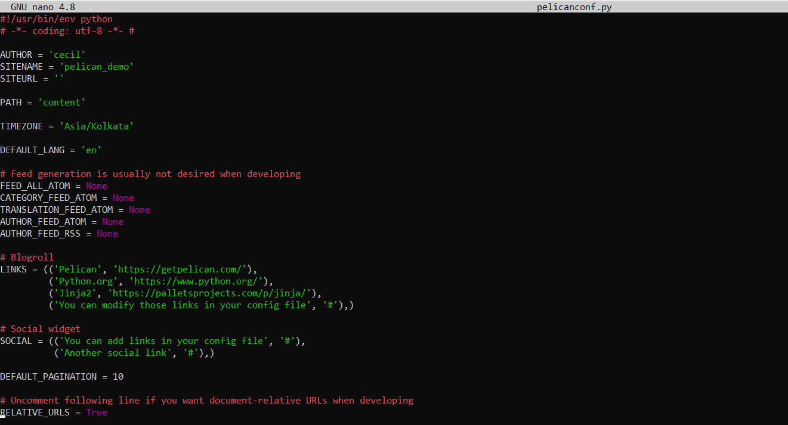
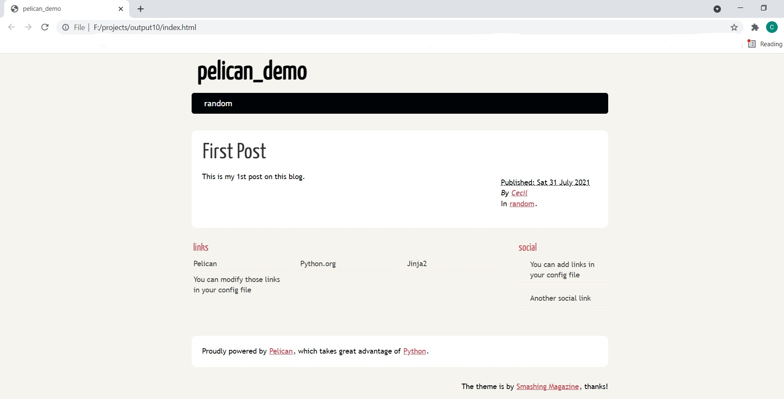

Pelican is a static-site generator. I can't really comment on what that mean's as I'm still learning:). This blog post will mainly touch upon the hurdles I faced while trying to get this running and what I learned during the process.
Part1: (Installation)
It's generally recommended to use a virtual environment while installing pelican and its additional dependencies. If not, that's fine too though managing all the libraries might eventually turn messy.
First step is to install the pelican package using pip or whichever tool is convenient
python3 -m pip install pelican
If you want to write the content for your site in markdown, you would have to install the extra python package markdown.
python3 -m pip install pelican[markdown]
Now If you're relatively new to python(and r using pip) like me, you'll probably be wondering what the square brackets [] are for around markdown. From whatever I read, it seems to mean that installing in this fasion makes markdown an optional dependency of pelican. And note its fine to install pelican first and then install markdown as a standalone package or as an optional dependency by invoking the above command in your terminal
To install it as a standalone package:
python3 -m pip install markdown
Now we need to set up pelican, do this by entering the directory where you'll be setting up your site/blog content, generating the ouput, etc. Now type into your terminal
pelican-quickstart
This should trigger a set of questions(default answer if any will be enclosed in brackets) whose answers will determine the basic layout of a configuration file wich we will shortly see and dicuss in greater detail
(personal_site_venv) cecil@DESKTOP:~/projects/personal_site/pelican_demo$ pelican-quickstart
Welcome to pelican-quickstart v4.6.0.
This script will help you create a new Pelican-based website.
Please answer the following questions so this script can generate the files needed by Pelican.
> Where do you want to create your new web site? [.] .
> What will be the title of this web site? pelican_demo
> Who will be the author of this web site? cecil
> What will be the default language of this web site? [en]
> Do you want to specify a URL prefix? e.g., https://example.com (Y/n) n
> Do you want to enable article pagination? (Y/n) Y
> How many articles per page do you want? [10]
> What is your time zone? [Europe/Paris] Asia/Kolkata
> Do you want to generate a tasks.py/Makefile to automate generation and publishing? (Y/n) Y
> Do you want to upload your website using FTP? (y/N) N
> Do you want to upload your website using SSH? (y/N) N
> Do you want to upload your website using Dropbox? (y/N)
> Do you want to upload your website using S3? (y/N)
> Do you want to upload your website using Rackspace Cloud Files? (y/N)
> Do you want to upload your website using GitHub Pages? (y/N) y
> Is this your personal page (username.github.io)? (y/N) y
Done. Your new project is available at /home/cecil/projects/personal_site/pelican_demo
The above were my responses and might vary from peson to person(For example I was using github pages to host my content and hence answered yes to that, though I confess I'm not sure where it makes a difference) Once you answer these questions you'll find that the directory now contains a
- Makefile
- content (a directory where you'll store all your content)
- output (directory where the resulting output corresponding to your content and configuration is generated)
- pelicanconf.py (file which stores the configuration by setting values of necessary variables)
- publishconf.py (not yet sure of what it does)
- tasks.py (not yet sure of where its used, seems to be generated as a result of answering yes to the previous question regarding automatic generation)
The sample pelicanconf.py file generated as a result:

Part2: (Writing content):
Lets start with making a simple post. Since I'm writing the post in markdown, you'll have to have the extra markdown package installed as well(instructions above in part1). Enter the content folder and create a sample file:
nano demo.md
Here's the example I'll be using for this post:

After filling it out in a similiar fasion and supplying it enough metadata(more on metadata later), save it and lets generate the output. go back to the main directory of the website and invoke:
pelican content -s pelicanconf.py
you'll find that pelican has populated the output directory with an index.html file and a bunch of other files. Now if you're using Github for hosting your blog, one workflow would be to just upload this output folder generated to github as the github page repository.
On opening the index.html which is the homepage, you'll find that there's no css and it looks ugly.

Dont worry this is because we haven't enabled relative URL's yet. You can confirm this by opening the index.html file, press ctrl+shift+i, this should load the inspect element menu. Now go to the netowork section and reload the page, you should see the main.css file highlighted in red indicating there's some error

On hovering over the main.css it should reveal the path where its triying to find the css file and that it doesnt actually exist. Now lets enable relative url's. Go to pelicanconf.py and uncomment the RELATIVE_URLS variable to set it to True.

Now generate the output again with the same command as before, and open the index.html file

You can see that the CSS has loaded up right and the default pelican theme(Smashing Magazine) is being used.
In the coming posts, I'll cover how to add your custom theme, social icons, and how to setup a custom homepage.